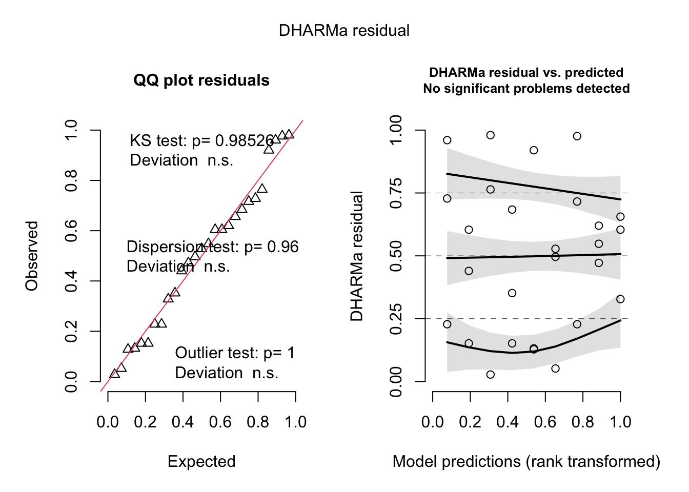
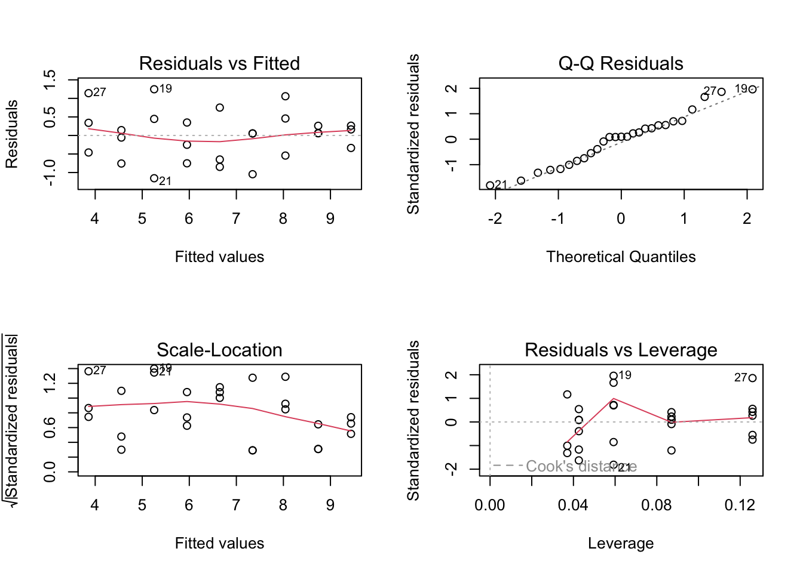
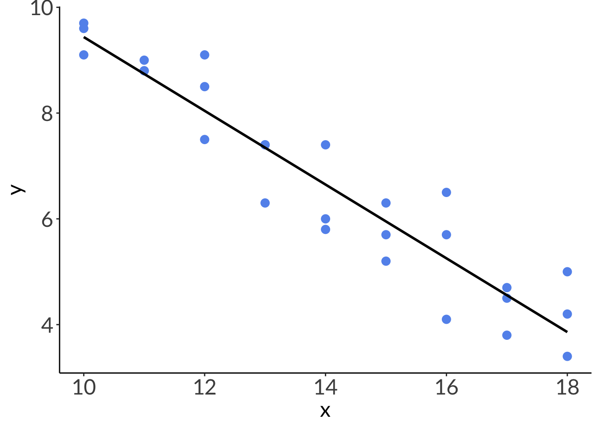
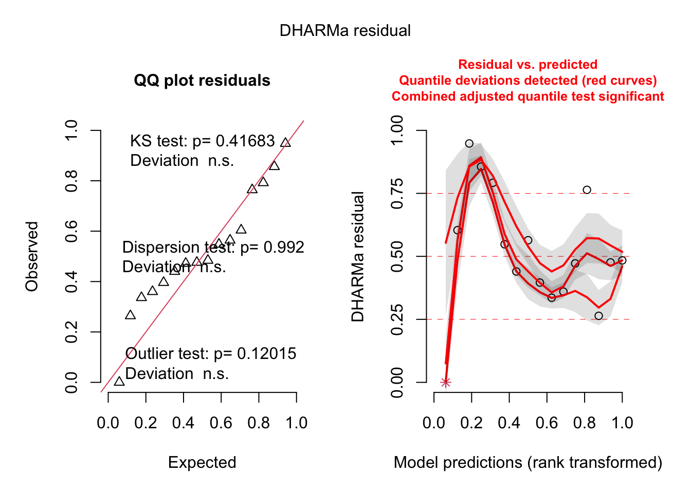
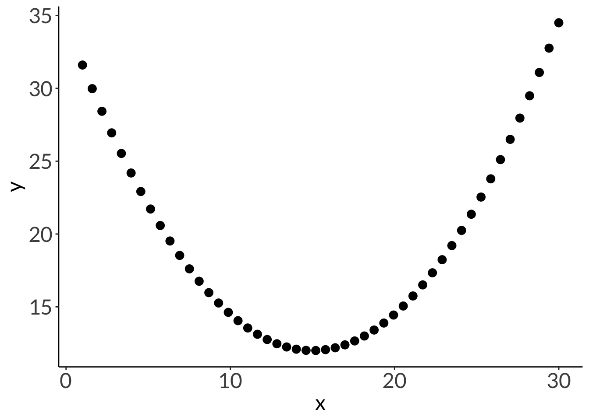

Residuals are the difference between the actual observed value (\(y_i\)) and the model prediction (\(\hat{y}\)) at some value of \(x\).
\[
residual = y_i - \hat{y}
\]
Ordinary least squares minimizes the sum of squares of the residuals.
b. Model equations
OLS gives you an equation for a line.
$$ \[\begin{align}
y &= b + mx \\
y &= \beta_0 + \beta_1x + \epsilon \\
\end{align}\] $$ \(\beta\) terms (“betas”) are often referred to as “model coefficients”.
c. Mathematical hypothesis
Statistically, the hypotheses are:
H_0_: the predictor variable does not predict the response
H_A_: the predictor variable does predict the response
\[
\begin{align}
t &= \frac{r\sqrt{n - 2}}{\sqrt{1-r^2}} \\
df &= n -2
\end{align}
\]
2. R2
Code
df <-tibble(x =seq(from =1, to =20, by =1),r2_1 =3*x +1,r2_between =runif(n =20, min =1, max =5)*x +runif(n =20, min =1, max =5),r2_0 =runif(n =20, min =1, max =20))lm(r2_1 ~ x, data = df) %>%summary()
Call:
lm(formula = r2_1 ~ x, data = df)
Residuals:
Min 1Q Median 3Q Max
-3.676e-15 -1.312e-15 -5.240e-17 8.432e-16 7.220e-15
Coefficients:
Estimate Std. Error t value Pr(>|t|)
(Intercept) 1.000e+00 1.142e-15 8.757e+14 <2e-16 ***
x 3.000e+00 9.532e-17 3.147e+16 <2e-16 ***
---
Signif. codes: 0 '***' 0.001 '**' 0.01 '*' 0.05 '.' 0.1 ' ' 1
Residual standard error: 2.458e-15 on 18 degrees of freedom
Multiple R-squared: 1, Adjusted R-squared: 1
F-statistic: 9.905e+32 on 1 and 18 DF, p-value: < 2.2e-16
You’re working on white abalone conservation and you’re concerned about warming temperatures on abalone growth.
You keep abalone in tanks at different temperatures that range from cold (10 °C) to warm (18 °C) for 4 weeks. You measure growth as the difference in mass between the beginning to the end of your experiment.
How does water temperature affect abalone growth?
a. generating the data
Code
set.seed(666)abalone <-tibble(temperature =seq(from =10, to =18, by =1),growth1 =runif(length(temperature), min =-0.7, max =-0.63)*temperature +runif(length(temperature), min =15, max =17),growth2 =runif(length(temperature), min =-0.7, max =-0.63)*temperature +runif(length(temperature), min =15, max =17),growth3 =runif(length(temperature), min =-0.7, max =-0.63)*temperature +runif(length(temperature), min =15, max =17)) %>%pivot_longer(cols = growth1:growth3,names_to ="rep",values_to ="growth") %>%mutate(growth =round(growth, digits =1)) %>%select(temperature, growth)# look at your data:head(abalone, 10)
Seems like there is a linear relationship between temperature and abalone growth. As temperature increases, abalone growth decreases.
b. fitting a model
Code
abalone_model <-lm(growth ~ temperature,data = abalone)# just checking DHARMa residuals just in caseDHARMa::simulateResiduals(abalone_model, plot =TRUE)

Object of Class DHARMa with simulated residuals based on 250 simulations with refit = FALSE . See ?DHARMa::simulateResiduals for help.
Scaled residual values: 0.328 0.604 0.656 0.62 0.548 0.472 0.228 0.976 0.716 0.052 0.496 0.528 0.128 0.132 0.92 0.352 0.684 0.152 0.98 0.764 ...
Code
# base R residualspar(mfrow =c(2, 2))plot(abalone_model)

c. looking at model coefficients
Code
summary(abalone_model)
Call:
lm(formula = growth ~ temperature, data = abalone)
Residuals:
Min 1Q Median 3Q Max
-1.15370 -0.50093 0.06019 0.34491 1.24630
Coefficients:
Estimate Std. Error t value Pr(>|t|)
(Intercept) 16.40926 0.69633 23.57 < 2e-16 ***
temperature -0.69722 0.04891 -14.25 1.65e-13 ***
---
Signif. codes: 0 '***' 0.001 '**' 0.01 '*' 0.05 '.' 0.1 ' ' 1
Residual standard error: 0.6562 on 25 degrees of freedom
Multiple R-squared: 0.8904, Adjusted R-squared: 0.8861
F-statistic: 203.2 on 1 and 25 DF, p-value: 1.65e-13
Code
# common way of representing model summaries# from flextable packageflextable::as_flextable(abalone_model)
F-statistic: 203.2 on 25 and 1 DF, p-value: 0.0000
Code
# better tableflextable::as_flextable(abalone_model) %>%set_formatter(values =list("p.value"=function(x){ # special function to represent p < 0.001 z <- scales::label_pvalue()(x) z[!is.finite(x)] <-"" z }))
F-statistic: 203.2 on 25 and 1 DF, p-value: 0.0000
Code
# somewhat more customizable way# from modelsummary packagemodelsummary(abalone_model)
tinytable_2gyxaqhn45q40otzoh59
(1)
(Intercept)
16.409
(0.696)
temperature
-0.697
(0.049)
Num.Obs.
27
R2
0.890
R2 Adj.
0.886
AIC
57.8
BIC
61.7
Log.Lik.
-25.899
F
203.189
RMSE
0.63
Code
# better tablemodelsummary(list("Abalone model"= abalone_model), # naming the modelfmt =2, # rounding digits to 2 decimal placesestimate ="{estimate} [{conf.low}, {conf.high}] ({p.value})", # customizing appearancestatistic =NULL, # not displaying standard errorgof_omit ='DF|AIC|BIC|Log.Lik.|RMSE') # taking out some extraneous info
tinytable_rj8md2mmzid7f92ng9fw
Abalone model
(Intercept)
16.41 [14.98, 17.84] (<0.01)
temperature
-0.70 [-0.80, -0.60] (<0.01)
Num.Obs.
27
R2
0.890
R2 Adj.
0.886
F
203.189
Code
# using gtsummary packagetbl_regression(abalone_model,intercept =TRUE)
Characteristic
Beta
95% CI1
p-value
(Intercept)
16
15, 18
<0.001
temperature
-0.70
-0.80, -0.60
<0.001
1 CI = Confidence Interval
Code
# more customizingtbl_regression(abalone_model, # model objectintercept =TRUE) %>%# show the interceptas_flex_table() # turn it into a flextable (easier to save)
Characteristic
Beta
95% CI1
p-value
(Intercept)
16
15, 18
<0.001
temperature
-0.70
-0.80, -0.60
<0.001
1CI = Confidence Interval
Code
anova(abalone_model)
Analysis of Variance Table
Response: growth
Df Sum Sq Mean Sq F value Pr(>F)
temperature 1 87.501 87.501 203.19 1.65e-13 ***
Residuals 25 10.766 0.431
---
Signif. codes: 0 '***' 0.001 '**' 0.01 '*' 0.05 '.' 0.1 ' ' 1
d. visualizing the model
Code
model_preds <-ggpredict(abalone_model,terms ="temperature")# look at the output:model_preds
# plotting without 95% CIggplot(abalone, # using the actual dataaes(x = temperature, # x-axisy = growth)) +# y-axisgeom_point(color ="cornflowerblue", # each point is an individual abalonesize =3) +# model prediction: actual model linegeom_line(data = model_preds, # model prediction tableaes(x = x, # x-axisy = predicted), # y-axislinewidth =1) # line width

Code
# plottingggplot(abalone, # using the actual dataaes(x = temperature, # x-axisy = growth)) +# y-axis# plot the data first# each point is an individual abalonegeom_point(color ="cornflowerblue",size =3) +# model prediction: 95% CIgeom_ribbon(data = model_preds, # model prediction tableaes(x = x, # x-axisy = predicted, # y-axisymin = conf.low, # lower bound of 95% CIymax = conf.high), # upper bound of 95% CIalpha =0.2) +# transparency) # model prediction: actual model linegeom_line(data = model_preds, # model prediction tableaes(x = x, # x-axisy = predicted), # y-axislinewidth =1) # line width
# diagnostics from DHARMaDHARMa::simulateResiduals(model, plot =TRUE)

Object of Class DHARMa with simulated residuals based on 250 simulations with refit = FALSE . See ?DHARMa::simulateResiduals for help.
Scaled residual values: 0.484 0.476 0.264 0.764 0.472 0.36 0.336 0.396 0.564 0.44 0.548 0.792 0.856 0.948 0.604 0
Code
# summarysummary(model)
Call:
lm(formula = mean_temp_c ~ elevation_m, data = sonadora_sum)
Residuals:
Min 1Q Median 3Q Max
-0.67288 -0.07577 0.00022 0.09393 0.37042
Coefficients:
Estimate Std. Error t value Pr(>|t|)
(Intercept) 24.7807991 0.1719438 144.12 < 2e-16 ***
elevation_m -0.0055446 0.0002581 -21.48 4.08e-12 ***
---
Signif. codes: 0 '***' 0.001 '**' 0.01 '*' 0.05 '.' 0.1 ' ' 1
Residual standard error: 0.238 on 14 degrees of freedom
Multiple R-squared: 0.9706, Adjusted R-squared: 0.9684
F-statistic: 461.4 on 1 and 14 DF, p-value: 4.075e-12
x_lm <-seq(from =1, to =30, length.out =50)# y = a( x – h) 2 + kdf_para <-cbind(x = x_lm,y =0.1*(x_lm -15)^2+12) %>%as_tibble()ggplot(data = df_para, aes(x = x, y = y)) +geom_point(size =3)

Code
cor.test(df_para$x, df_para$y, method ="pearson")
Pearson's product-moment correlation
data: df_para$x and df_para$y
t = 0.90749, df = 48, p-value = 0.3687
alternative hypothesis: true correlation is not equal to 0
95 percent confidence interval:
-0.1540408 0.3939806
sample estimates:
cor
0.1298756
exponential growth example
Code
x_ex <-seq(from =5, to =9, length =30)y_ex <-exp(x_ex)df_ex <-cbind(x = x_ex,y =-exp(x_ex)) %>%as_tibble()lm_ex <-lm(y ~ x, data = df_ex)lm_ex
Call:
lm(formula = y ~ x, data = df_ex)
Coefficients:
(Intercept) x
9431 -1642
model summary
Code
summary(lm_ex)
Call:
lm(formula = y ~ x, data = df_ex)
Residuals:
Min 1Q Median 3Q Max
-2756.1 -660.5 226.3 843.2 1081.0
Coefficients:
Estimate Std. Error t value Pr(>|t|)
(Intercept) 9431.3 1111.3 8.486 3.16e-09 ***
x -1642.0 156.5 -10.492 3.30e-11 ***
---
Signif. codes: 0 '***' 0.001 '**' 0.01 '*' 0.05 '.' 0.1 ' ' 1
Residual standard error: 1023 on 28 degrees of freedom
Multiple R-squared: 0.7972, Adjusted R-squared: 0.79
F-statistic: 110.1 on 1 and 28 DF, p-value: 3.298e-11
model plots
Code
lm_pred <-ggpredict(lm_ex, terms =~x)ex_plot_noline <-ggplot(df_ex, aes(x= x, y = y)) +geom_point(shape =17, size =3, color ="orange") +theme_classic() +theme(text =element_text(size =14))ex_plot <-ggplot(df_ex, aes(x= x, y = y)) +geom_point(shape =17, size =3, color ="orange") +geom_line(data = lm_pred, aes(x = x, y = predicted), linewidth =1) +theme_classic() +theme(text =element_text(size =14))
diagnostic plots
Code
par(mfrow =c(2, 4))plot(model1, which =c(1), col ="cornflowerblue", pch =19)plot(lm_ex, which =c(1), col ="orange", pch =17)plot(model1, which =c(2), col ="cornflowerblue", pch =19)plot(lm_ex, which =c(2), col ="orange", pch =17)plot(model1, which =c(3), col ="cornflowerblue", pch =19)plot(lm_ex, which =c(3), col ="orange", pch =17)plot(model1, which =c(5), col ="cornflowerblue", pch =19)plot(lm_ex, which =c(5), col ="orange", pch =17)dev.off()
Citation
BibTeX citation:
@online{bui2024,
author = {Bui, An},
title = {Week 7 Figures - {Lectures} 12 and 13},
date = {2024-05-13},
url = {https://spring-2024.envs-193ds.com/lecture/lecture_week-07.html},
langid = {en}
}